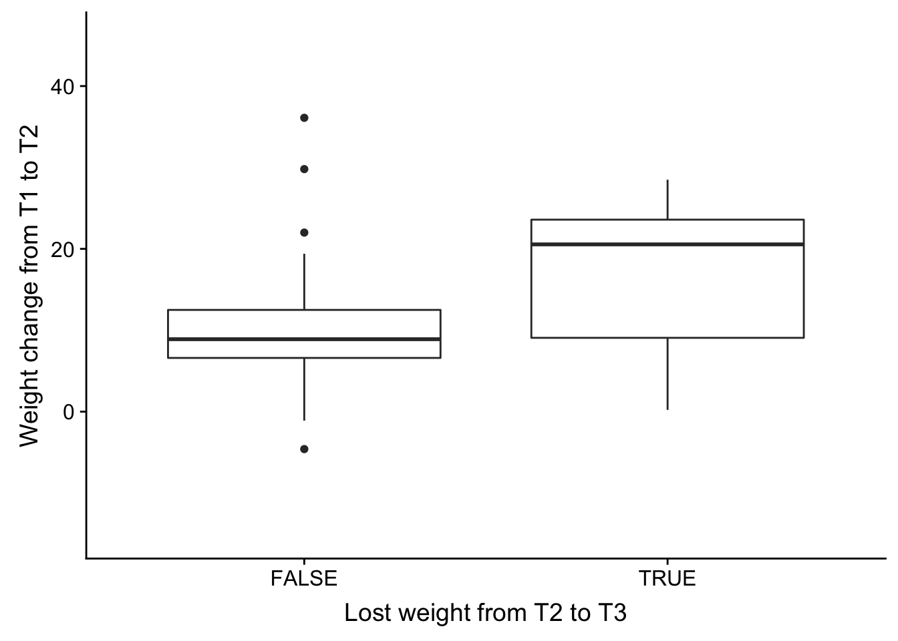
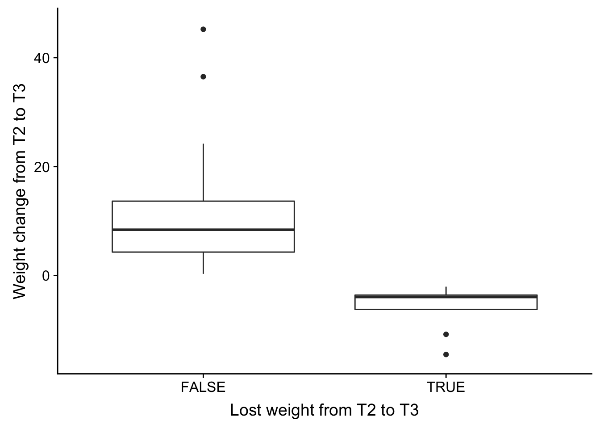
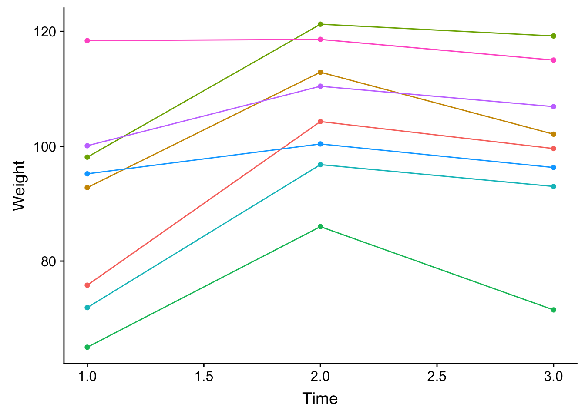

Last updated: 2018-11-15
workflowr checks: (Click a bullet for more information) ✔ R Markdown file: up-to-date
Great! Since the R Markdown file has been committed to the Git repository, you know the exact version of the code that produced these results.
✔ Environment: empty
Great job! The global environment was empty. Objects defined in the global environment can affect the analysis in your R Markdown file in unknown ways. For reproduciblity it’s best to always run the code in an empty environment.
✔ Seed:
set.seed(12345)
The command set.seed(12345) was run prior to running the code in the R Markdown file. Setting a seed ensures that any results that rely on randomness, e.g. subsampling or permutations, are reproducible.
✔ Session information: recorded
Great job! Recording the operating system, R version, and package versions is critical for reproducibility.
✔ Repository version: 7bcd123
wflow_publish or wflow_git_commit). workflowr only checks the R Markdown file, but you know if there are other scripts or data files that it depends on. Below is the status of the Git repository when the results were generated:
Ignored files:
Ignored: .DS_Store
Ignored: analysis/.DS_Store
Ignored: analysis/VennDiagram2018-07-24_06-55-46.log
Ignored: analysis/VennDiagram2018-07-24_06-56-13.log
Ignored: analysis/VennDiagram2018-07-24_06-56-50.log
Ignored: analysis/VennDiagram2018-07-24_06-58-41.log
Ignored: analysis/VennDiagram2018-07-24_07-00-07.log
Ignored: analysis/VennDiagram2018-07-24_07-00-42.log
Ignored: analysis/VennDiagram2018-07-24_07-01-08.log
Ignored: analysis/VennDiagram2018-08-17_15-13-24.log
Ignored: analysis/VennDiagram2018-08-17_15-13-30.log
Ignored: analysis/VennDiagram2018-08-17_15-15-06.log
Ignored: analysis/VennDiagram2018-08-17_15-16-01.log
Ignored: analysis/VennDiagram2018-08-17_15-17-51.log
Ignored: analysis/VennDiagram2018-08-17_15-18-42.log
Ignored: analysis/VennDiagram2018-08-17_15-19-21.log
Ignored: analysis/VennDiagram2018-08-20_09-07-57.log
Ignored: analysis/VennDiagram2018-08-20_09-08-37.log
Ignored: analysis/VennDiagram2018-08-26_19-54-03.log
Ignored: analysis/VennDiagram2018-08-26_20-47-08.log
Ignored: analysis/VennDiagram2018-08-26_20-49-49.log
Ignored: analysis/VennDiagram2018-08-27_00-04-36.log
Ignored: analysis/VennDiagram2018-08-27_00-09-27.log
Ignored: analysis/VennDiagram2018-08-27_00-13-57.log
Ignored: analysis/VennDiagram2018-08-27_00-16-32.log
Ignored: analysis/VennDiagram2018-08-27_10-00-25.log
Ignored: analysis/VennDiagram2018-08-28_06-03-13.log
Ignored: analysis/VennDiagram2018-08-28_06-03-14.log
Ignored: analysis/VennDiagram2018-08-28_06-05-50.log
Ignored: analysis/VennDiagram2018-08-28_06-06-58.log
Ignored: analysis/VennDiagram2018-08-28_06-10-12.log
Ignored: analysis/VennDiagram2018-08-28_06-10-13.log
Ignored: analysis/VennDiagram2018-08-28_06-18-29.log
Ignored: analysis/VennDiagram2018-08-28_07-22-26.log
Ignored: analysis/VennDiagram2018-08-28_07-22-27.log
Ignored: analysis/VennDiagram2018-08-28_13-05-27.log
Ignored: analysis/VennDiagram2018-09-12_01-45-59.log
Ignored: analysis/VennDiagram2018-09-12_01-49-31.log
Ignored: analysis/VennDiagram2018-09-12_01-58-11.log
Ignored: analysis/VennDiagram2018-09-12_01-59-46.log
Ignored: analysis/VennDiagram2018-09-12_02-08-07.log
Ignored: analysis/VennDiagram2018-09-12_02-08-56.log
Ignored: analysis/VennDiagram2018-11-15_14-20-08.log
Ignored: analysis/VennDiagram2018-11-15_14-20-15.log
Ignored: analysis/VennDiagram2018-11-15_14-20-23.log
Ignored: analysis/VennDiagram2018-11-15_14-21-14.log
Ignored: analysis/VennDiagram2018-11-15_14-21-57.log
Ignored: analysis/VennDiagram2018-11-15_14-33-34.log
Ignored: analysis/VennDiagram2018-11-15_14-36-19.log
Ignored: analysis/VennDiagram2018-11-15_14-48-41.log
Ignored: analysis/VennDiagram2018-11-15_14-48-42.log
Ignored: analysis/VennDiagram2018-11-15_15-03-35.log
Ignored: analysis/VennDiagram2018-11-15_15-03-55.log
Ignored: analysis/VennDiagram2018-11-15_15-07-05.log
Ignored: analysis/VennDiagram2018-11-15_15-07-25.log
Ignored: analysis/VennDiagram2018-11-15_15-09-29.log
Ignored: analysis/VennDiagram2018-11-15_15-09-48.log
Ignored: analysis/VennDiagram2018-11-15_15-14-30.log
Ignored: analysis/VennDiagram2018-11-15_15-15-25.log
Ignored: analysis/VennDiagram2018-11-15_15-16-04.log
Ignored: data/DAVID_2covar/
Ignored: data/DAVID_results/
Ignored: data/Eigengenes/
Ignored: data/aux_info/
Ignored: data/hg_38/
Ignored: data/libParams/
Ignored: data/logs/
Ignored: docs/VennDiagram2018-07-24_06-55-46.log
Ignored: docs/VennDiagram2018-07-24_06-56-13.log
Ignored: docs/VennDiagram2018-07-24_06-56-50.log
Ignored: docs/VennDiagram2018-07-24_06-58-41.log
Ignored: docs/VennDiagram2018-07-24_07-00-07.log
Ignored: docs/VennDiagram2018-07-24_07-00-42.log
Ignored: docs/VennDiagram2018-07-24_07-01-08.log
Ignored: docs/figure/.DS_Store
Ignored: output/.DS_Store
Untracked files:
Untracked: docs/figure/time_two_covar.Rmd/
Unstaged changes:
Modified: analysis/time_two_covar.Rmd
| File | Version | Author | Date | Message |
|---|---|---|---|---|
| Rmd | 7bcd123 | Lauren Blake | 2018-11-15 | Nov 15 weight info |
The goal of this script is to identify the individuals that weight relapsed and the amount of change they underwent.
# Load libraries
library(ggplot2)Warning: package 'ggplot2' was built under R version 3.4.4library(cowplot)Warning: package 'cowplot' was built under R version 3.4.4
Attaching package: 'cowplot'The following object is masked from 'package:ggplot2':
ggsave# Get weight change data
weight_change <- read.csv("../data/weight_change.csv")# Subset to time point 3
weight_change_t3 <- weight_change[weight_change$time == 3,]
summary(weight_change_t3) BAN_ID time Weight Weight_change
Min. :2201 Min. :3 Min. : 71.5 Min. :-14.500
1st Qu.:2218 1st Qu.:3 1st Qu.:102.8 1st Qu.: 0.900
Median :2239 Median :3 Median :108.0 Median : 7.100
Mean :2237 Mean :3 Mean :110.0 Mean : 7.601
3rd Qu.:2256 3rd Qu.:3 3rd Qu.:118.4 3rd Qu.: 10.800
Max. :2274 Max. :3 Max. :148.9 Max. : 45.200
NA's :14 NA's :14
Relapse_t3 Relapse_t4 Relapse_t5
Min. :0.0000 Min. :0 Min. :0.0
1st Qu.:0.0000 1st Qu.:0 1st Qu.:0.0
Median :0.0000 Median :0 Median :0.5
Mean :0.1951 Mean :0 Mean :0.5
3rd Qu.:0.0000 3rd Qu.:0 3rd Qu.:1.0
Max. :1.0000 Max. :0 Max. :1.0
NA's :14 NA's :49 NA's :49 # How many are negative and how many are neutral/positive weight gain?
summary(weight_change_t3$Weight_change <0) Mode FALSE TRUE NA's
logical 33 8 14 weight_change_t3[,5] <- weight_change_t3$Weight_change <0
colnames(weight_change_t3) <- c("BAN_ID", "time", "Weight", "Weight_change", "weight_relapse")
# Weight change from T2 to T3
weight_change_t3 <- weight_change_t3[complete.cases(weight_change_t3), ]
weight_change_t3_plot <- ggplot(weight_change_t3, aes(weight_relapse, Weight_change)) + geom_boxplot() + xlab("Lost weight from T2 to T3") + ylab("Weight change from T2 to T3")
save_plot("/Users/laurenblake/Dropbox/Figures/weight_change_t3.png", weight_change_t3_plot, base_aspect_ratio = 1)# Subset to time point 1
weight_change_t1 <- weight_change[weight_change$time == 1, 1:5]
# How many are negative and how many are neutral/positive weight gain?
summary(weight_change_t1$Relapse_t3 >0) Mode FALSE TRUE NA's
logical 33 8 14 weight_change_t1[,6] <- weight_change_t1$Relapse_t3 >0
colnames(weight_change_t1) <- c("BAN_ID", "time", "Weight", "Weight_change", "Relapse_t3", "Relapse_notes")
weight_change_t1 <- weight_change_t1[complete.cases(weight_change_t1), ]
# Plot weight at T1
weight_t1_plot <- ggplot(weight_change_t1, aes(Relapse_notes, Weight)) + geom_boxplot() + xlab("Lost weight from T2 to T3") + ylab("Weight") + ggtitle("Weight at T1")
save_plot("/Users/laurenblake/Dropbox/Figures/weight_t1.png", weight_t1_plot, base_aspect_ratio = 1)
# Subset to time point 2
weight_change_t1 <- weight_change[weight_change$time == 2, 1:5]
# How many are negative and how many are neutral/positive weight gain?
summary(weight_change_t1$Relapse_t3 >0) Mode FALSE TRUE NA's
logical 33 8 14 weight_change_t1[,6] <- weight_change_t1$Relapse_t3 >0
colnames(weight_change_t1) <- c("BAN_ID", "time", "Weight", "Weight_change", "Relapse_t3", "Relapse_notes")
weight_change_t1 <- weight_change_t1[complete.cases(weight_change_t1), ]
# Plot weight at T1
weight_t2_plot <- ggplot(weight_change_t1, aes(Relapse_notes, Weight)) + geom_boxplot() + xlab("Lost weight from T2 to T3") + ylab("Weight") + ggtitle("Weight at T2") + ylim(53,125)
save_plot("/Users/laurenblake/Dropbox/Figures/weight_t2.png", weight_t2_plot, base_aspect_ratio = 1)
# Weight change from T1 to T2
weight_change_t1 <- weight_change_t1[complete.cases(weight_change_t1), ]
weight_change_t1_plot <- ggplot(weight_change_t1, aes(Relapse_notes, Weight_change)) + geom_boxplot() + xlab("Lost weight from T2 to T3") + ylab("Weight change from T1 to T2") + ylim(-15,46)
plot_grid(weight_change_t1_plot)
save_plot("/Users/laurenblake/Dropbox/Figures/weight_change_t1t2.png", weight_change_t1_plot, base_aspect_ratio = 1)
# Subset to time point 3
weight_change_t1 <- weight_change[weight_change$time == 3, 1:5]
# How many are negative and how many are neutral/positive weight gain?
summary(weight_change_t1$Relapse_t3 >0) Mode FALSE TRUE NA's
logical 33 8 14 weight_change_t1[,6] <- weight_change_t1$Relapse_t3 >0
colnames(weight_change_t1) <- c("BAN_ID", "time", "Weight", "Weight_change", "Relapse_t3", "Relapse_notes")
weight_change_t1 <- weight_change_t1[complete.cases(weight_change_t1), ]
# Plot weight at T1
weight_t3_plot <- ggplot(weight_change_t1, aes(Relapse_notes, Weight)) + geom_boxplot() + xlab("Lost weight from T2 to T3") + ylab("Weight") + ggtitle("Weight at T3") + ylim(53,125)
save_plot("/Users/laurenblake/Dropbox/Figures/weight_t3.png", weight_t3_plot, base_aspect_ratio = 1)Warning: Removed 6 rows containing non-finite values (stat_boxplot).weight_change_t1_plot <- ggplot(weight_change_t1, aes(Relapse_notes, Weight_change)) + geom_boxplot() + xlab("Lost weight from T2 to T3") + ylab("Weight change from T2 to T3") + ylim(-15,46)
plot_grid(weight_change_t1_plot)
save_plot("/Users/laurenblake/Dropbox/Figures/weight_change_t2t3.png", weight_change_t1_plot, base_aspect_ratio = 1)# Let's look at the weight over time for the individuals with weight loss
weight_change_8 <- weight_change[weight_change$Relapse_t3 == 1,]
weight_change_8 <- weight_change_8[complete.cases(weight_change_8[,1:5]), ]
# Plot the individuals
ind_time <- ggplot(weight_change_8, aes(time, Weight, colour = as.factor(weight_change_8$BAN_ID))) + geom_point() + geom_line() + theme(legend.position="none") + xlab("Time")
plot_grid(ind_time)
save_plot("/Users/laurenblake/Dropbox/Figures/weight_change_no_t3.png", ind_time, base_aspect_ratio = 1)
# Summarize the
weight_change_8_t3 <- weight_change_8[weight_change_8$time == 3,]
summary(weight_change_8_t3) BAN_ID time Weight Weight_change
Min. :2207 Min. :3 Min. : 71.50 Min. :-14.500
1st Qu.:2226 1st Qu.:3 1st Qu.: 95.47 1st Qu.: -6.225
Median :2238 Median :3 Median :100.85 Median : -3.950
Mean :2241 Mean :3 Mean :100.45 Mean : -5.889
3rd Qu.:2262 3rd Qu.:3 3rd Qu.:108.92 3rd Qu.: -3.595
Max. :2270 Max. :3 Max. :119.20 Max. : -2.050
Relapse_t3 Relapse_t4 Relapse_t5
Min. :1 Min. :0 Min. :0.00
1st Qu.:1 1st Qu.:0 1st Qu.:0.25
Median :1 Median :0 Median :0.50
Mean :1 Mean :0 Mean :0.50
3rd Qu.:1 3rd Qu.:0 3rd Qu.:0.75
Max. :1 Max. :0 Max. :1.00
NA's :6 NA's :6 # Read in the clinical covariates
clinical_sample_info <- read.csv("../data/lm_covar_fixed_random.csv")
dim(clinical_sample_info)[1] 156 14# Subset to T1-T3
clinical_sample <- clinical_sample_info[1:144,(-12)]
dim(clinical_sample)[1] 144 13# Relapse
chisq.test(as.factor(clinical_sample$Time), as.factor(clinical_sample$Relapse_t3), simulate.p.value = TRUE)$p.value[1] 0.9585207# Individual-yes
chisq.test(as.factor(clinical_sample$Individ), as.factor(clinical_sample$Relapse_t3), simulate.p.value = TRUE)$p.value[1] 0.0004997501# Age-yes
summary(lm(clinical_sample$Age ~ as.factor(clinical_sample$Relapse_t3)))
Call:
lm(formula = clinical_sample$Age ~ as.factor(clinical_sample$Relapse_t3))
Residuals:
Min 1Q Median 3Q Max
-9.583 -5.583 -1.978 2.022 20.021
Coefficients:
Estimate Std. Error t value
(Intercept) 23.9785 0.8045 29.806
as.factor(clinical_sample$Relapse_t3)1 6.6048 1.7763 3.718
Pr(>|t|)
(Intercept) < 2e-16 ***
as.factor(clinical_sample$Relapse_t3)1 0.000311 ***
---
Signif. codes: 0 '***' 0.001 '**' 0.01 '*' 0.05 '.' 0.1 ' ' 1
Residual standard error: 7.758 on 115 degrees of freedom
(27 observations deleted due to missingness)
Multiple R-squared: 0.1073, Adjusted R-squared: 0.09956
F-statistic: 13.83 on 1 and 115 DF, p-value: 0.0003114# BE-no
chisq.test(as.factor(clinical_sample$BE_GROUP), as.factor(clinical_sample$Relapse_t3), simulate.p.value = TRUE)$p.value[1] 0.4742629# Psych meds- no
chisq.test(as.factor(clinical_sample$psychmeds), as.factor(clinical_sample$Relapse_t3), simulate.p.value = TRUE)$p.value[1] 0.8270865# RBC-no
summary(lm(clinical_sample$RBC ~ as.factor(clinical_sample$Relapse_t3)))
Call:
lm(formula = clinical_sample$RBC ~ as.factor(clinical_sample$Relapse_t3))
Residuals:
Min 1Q Median 3Q Max
-1.40750 -0.24763 0.02237 0.27237 1.22237
Coefficients:
Estimate Std. Error t value
(Intercept) 4.22763 0.04503 93.883
as.factor(clinical_sample$Relapse_t3)1 -0.01013 0.09943 -0.102
Pr(>|t|)
(Intercept) <2e-16 ***
as.factor(clinical_sample$Relapse_t3)1 0.919
---
Signif. codes: 0 '***' 0.001 '**' 0.01 '*' 0.05 '.' 0.1 ' ' 1
Residual standard error: 0.4343 on 115 degrees of freedom
(27 observations deleted due to missingness)
Multiple R-squared: 9.034e-05, Adjusted R-squared: -0.008605
F-statistic: 0.01039 on 1 and 115 DF, p-value: 0.919# AE-no
summary(lm(clinical_sample$AE ~ as.factor(clinical_sample$Relapse_t3)))
Call:
lm(formula = clinical_sample$AE ~ as.factor(clinical_sample$Relapse_t3))
Residuals:
Min 1Q Median 3Q Max
-0.25833 -0.06344 -0.06344 0.03656 2.64167
Coefficients:
Estimate Std. Error t value
(Intercept) 0.16344 0.02970 5.503
as.factor(clinical_sample$Relapse_t3)1 0.09489 0.06558 1.447
Pr(>|t|)
(Intercept) 2.29e-07 ***
as.factor(clinical_sample$Relapse_t3)1 0.151
---
Signif. codes: 0 '***' 0.001 '**' 0.01 '*' 0.05 '.' 0.1 ' ' 1
Residual standard error: 0.2864 on 115 degrees of freedom
(27 observations deleted due to missingness)
Multiple R-squared: 0.01788, Adjusted R-squared: 0.009343
F-statistic: 2.094 on 1 and 115 DF, p-value: 0.1506# Race- no
chisq.test(as.factor(clinical_sample$Race), as.factor(clinical_sample$Relapse_t3), simulate.p.value = TRUE)$p.value[1] 0.4582709# AL- no
summary(lm(clinical_sample$AL ~ as.factor(clinical_sample$Relapse_t3)))
Call:
lm(formula = clinical_sample$AL ~ as.factor(clinical_sample$Relapse_t3))
Residuals:
Min 1Q Median 3Q Max
-1.11505 -0.41505 -0.01505 0.48495 1.38495
Coefficients:
Estimate Std. Error t value
(Intercept) 1.81505 0.05936 30.580
as.factor(clinical_sample$Relapse_t3)1 -0.11505 0.13105 -0.878
Pr(>|t|)
(Intercept) <2e-16 ***
as.factor(clinical_sample$Relapse_t3)1 0.382
---
Signif. codes: 0 '***' 0.001 '**' 0.01 '*' 0.05 '.' 0.1 ' ' 1
Residual standard error: 0.5724 on 115 degrees of freedom
(27 observations deleted due to missingness)
Multiple R-squared: 0.006657, Adjusted R-squared: -0.00198
F-statistic: 0.7707 on 1 and 115 DF, p-value: 0.3818# AN- no
summary(lm(clinical_sample$AN ~ as.factor(clinical_sample$Relapse_t3)))
Call:
lm(formula = clinical_sample$AN ~ as.factor(clinical_sample$Relapse_t3))
Residuals:
Min 1Q Median 3Q Max
-2.2258 -0.9258 -0.3258 0.5742 4.5500
Coefficients:
Estimate Std. Error t value
(Intercept) 3.0258 0.1282 23.607
as.factor(clinical_sample$Relapse_t3)1 0.2242 0.2830 0.792
Pr(>|t|)
(Intercept) <2e-16 ***
as.factor(clinical_sample$Relapse_t3)1 0.43
---
Signif. codes: 0 '***' 0.001 '**' 0.01 '*' 0.05 '.' 0.1 ' ' 1
Residual standard error: 1.236 on 115 degrees of freedom
(27 observations deleted due to missingness)
Multiple R-squared: 0.005428, Adjusted R-squared: -0.003221
F-statistic: 0.6276 on 1 and 115 DF, p-value: 0.4299# RIN- no
summary(lm(clinical_sample$RIN ~ as.factor(clinical_sample$Relapse_t3)))
Call:
lm(formula = clinical_sample$RIN ~ as.factor(clinical_sample$Relapse_t3))
Residuals:
Min 1Q Median 3Q Max
-2.37742 -0.27742 0.02258 0.42258 1.22258
Coefficients:
Estimate Std. Error t value
(Intercept) 6.67742 0.07043 94.809
as.factor(clinical_sample$Relapse_t3)1 -0.10659 0.15551 -0.685
Pr(>|t|)
(Intercept) <2e-16 ***
as.factor(clinical_sample$Relapse_t3)1 0.494
---
Signif. codes: 0 '***' 0.001 '**' 0.01 '*' 0.05 '.' 0.1 ' ' 1
Residual standard error: 0.6792 on 115 degrees of freedom
(27 observations deleted due to missingness)
Multiple R-squared: 0.004069, Adjusted R-squared: -0.004592
F-statistic: 0.4698 on 1 and 115 DF, p-value: 0.4945sessionInfo()R version 3.4.3 (2017-11-30)
Platform: x86_64-apple-darwin15.6.0 (64-bit)
Running under: OS X El Capitan 10.11.6
Matrix products: default
BLAS: /Library/Frameworks/R.framework/Versions/3.4/Resources/lib/libRblas.0.dylib
LAPACK: /Library/Frameworks/R.framework/Versions/3.4/Resources/lib/libRlapack.dylib
locale:
[1] en_US.UTF-8/en_US.UTF-8/en_US.UTF-8/C/en_US.UTF-8/en_US.UTF-8
attached base packages:
[1] stats graphics grDevices utils datasets methods base
other attached packages:
[1] cowplot_0.9.3 ggplot2_3.0.0
loaded via a namespace (and not attached):
[1] Rcpp_0.12.18 compiler_3.4.3 pillar_1.3.0
[4] git2r_0.23.0 plyr_1.8.4 workflowr_1.1.1
[7] bindr_0.1.1 R.methodsS3_1.7.1 R.utils_2.7.0
[10] tools_3.4.3 digest_0.6.16 evaluate_0.11
[13] tibble_1.4.2 gtable_0.2.0 pkgconfig_2.0.2
[16] rlang_0.2.2 yaml_2.2.0 bindrcpp_0.2.2
[19] withr_2.1.2 stringr_1.3.1 dplyr_0.7.6
[22] knitr_1.20 rprojroot_1.3-2 grid_3.4.3
[25] tidyselect_0.2.4 glue_1.3.0 R6_2.2.2
[28] rmarkdown_1.10 purrr_0.2.5 magrittr_1.5
[31] whisker_0.3-2 backports_1.1.2 scales_1.0.0
[34] htmltools_0.3.6 assertthat_0.2.0 colorspace_1.3-2
[37] labeling_0.3 stringi_1.2.4 lazyeval_0.2.1
[40] munsell_0.5.0 crayon_1.3.4 R.oo_1.22.0
This reproducible R Markdown analysis was created with workflowr 1.1.1